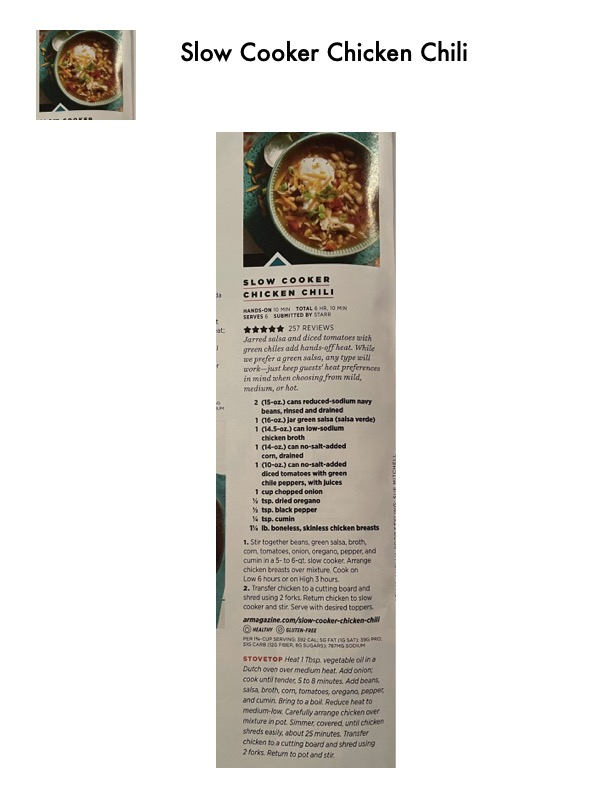

Slow Cooker Chicken Chili

Original cookbook page 260
Jarred salsa and diced tomatoes with green chiles add hands-off heat. While we prefer a green salsa, any type will work—just keep guests' heat preferences in mind. 5-star rated recipe by Starr.
Prep: 10 minutes • Cook: 6 hours (slow cooker) or 30 minutes (stovetop) • Total: 6 hr 10 minutes
Ingredients
- 2 (15-oz.) cans reduced-sodium navy beans, rinsed and drained
- 1 (16-oz.) jar green salsa (salsa verde)
- 1 (14.5-oz.) can low-sodium chicken broth
- 1 (14-oz.) can no-salt-added corn, drained
- 1 (10-oz.) can no-salt-added diced tomatoes with green chile peppers, with juices
- 1 cup chopped onion
- ½ tsp. dried oregano
- ½ tsp. black pepper
- ½ tsp. cumin
- 1½ lb. boneless, skinless chicken breasts
Instructions
- SLOW COOKER METHOD: Stir together beans, green salsa, broth, corn, tomatoes, onion, oregano, pepper, and cumin in a 5- to 6-qt. slow cooker. Arrange chicken breasts over mixture. Cook on Low 6 hours or on High 3 hours.
- Transfer chicken to a cutting board and shred using 2 forks. Return chicken to slow cooker and stir. Serve with desired toppers.
- STOVETOP VARIATION: Heat 1 Tbsp. vegetable oil in a Dutch oven over medium heat. Add onion; cook until tender, 5 to 8 minutes. Add beans, salsa, broth, corn, tomatoes, oregano, pepper, and cumin. Bring to a boil. Reduce heat to medium-low. Carefully arrange chicken over mixture in pot. Simmer, covered, until chicken shreds easily, about 25 minutes. Transfer chicken to a cutting board and shred using 2 forks. Return to pot and stir.
📝 Recipe Notes
5-star rating with 257 reviews. Heart-healthy and gluten-free. Per 1½-cup serving: 382 cal, 5g fat, 59g protein, 24g carbs, 781mg sodium. Source: armagazine.com/slow-cooker-chicken-chili
Recipe #260 from collection